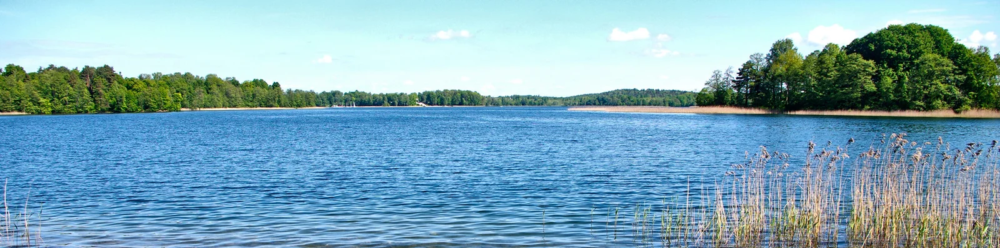
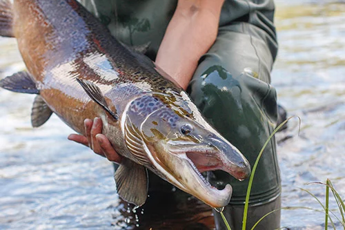
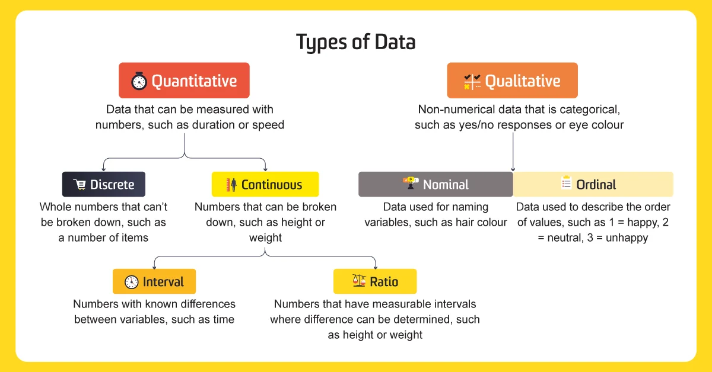
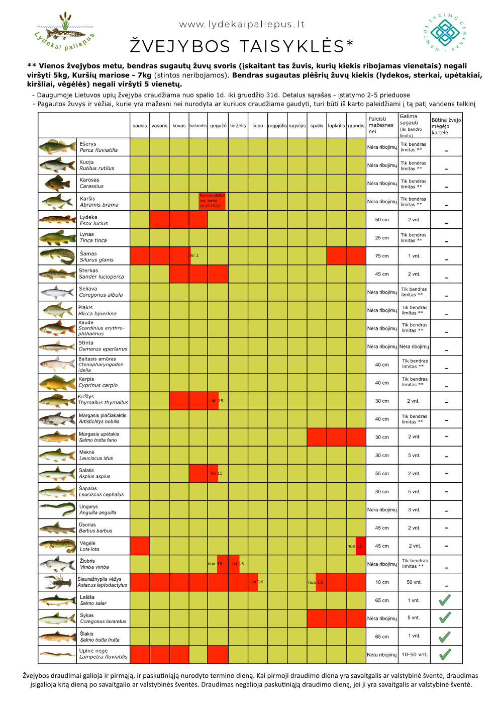
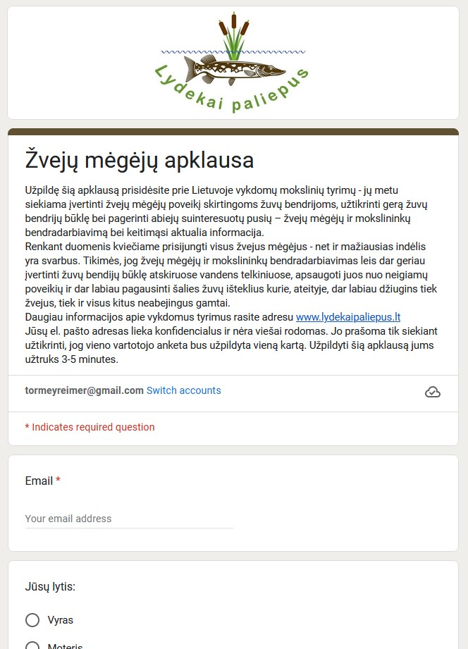
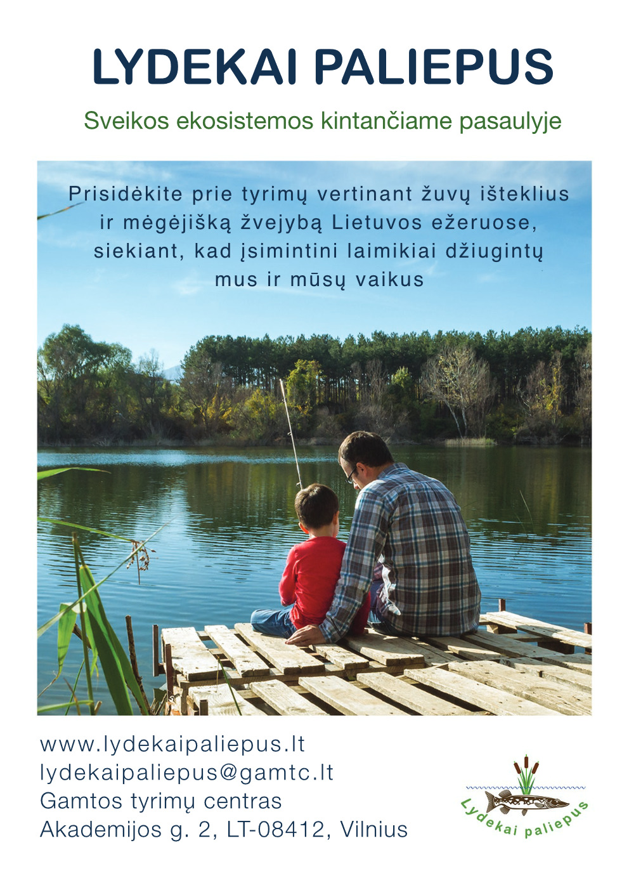
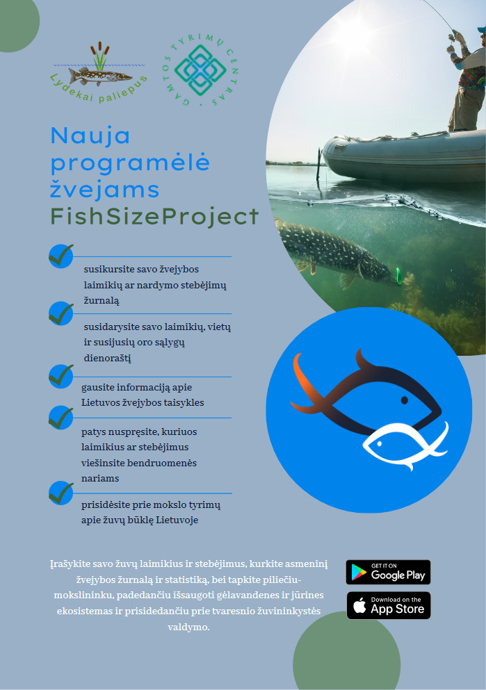
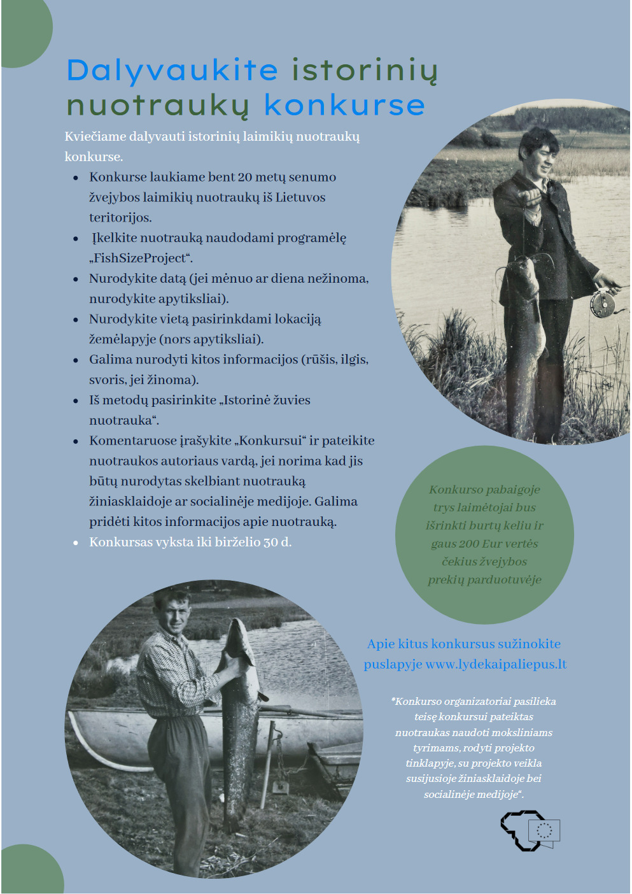

Lydekai Paliepus
Sveikos ekosistemos kintančiame pasaulyje
Lydekai paliepus – yra Lietuvos mokslų tarybos finansuojamas ir Gamtos Tyrimų Centro mokslininkų vykdomas projektas. Mūsų tikslas - prisidėti gerinant ekosistemų būklę ir žuvininkystės valdymą Lietuvos vidaus vandenyse ir pasaulyje. Ežerai, tvenkiniai, upės yra svarbūs tiek gyvajai gamtai, tiek žmonių poilsiui, žvejybai bei ekosistemų paslaugoms. Mes siekiame geriau suprasti žmogaus įtaką vidaus vandenų ekosistemoms, sukurti aiškius ir šiuolaikiškus modelius ir priemones žuvų išteklių valdymui, bei pasitelkti piliečių mokslą žuvų gausumo ir ekosistemos būklės įvertinimui.
Tyrinėti


Daugiau apie mūsų veiklas
Mėgėjiškos žvejybos tyrimai
Kaip teisingai paleisti žuvį pagauk-paleisk žvejyboje?
Išbandykite mūsų programėlę

Nuotoliniai mokymai (anglų kalba)
Individų dydžiais paremti ekosistemų modeliai ir jų taikymas vidaus vandenų ir pakrantės ekosistemoms

Dirbtiniu intelektu paremtas vaizdų surinkimas ir analizė biologiniuose tyrimuose

Sugavimų pastangai standartizavimas žuvininkystės tyrimuose naudojant R programą

Biologinių duomenų paruošimas statistinei analizei

Pavadinimo pavyzdys

Žvejybos taisyklės

Anketa žvejams

Atsisiųskite mūsų skrajutę

Programėlė Fish Size Project

Senų nuotraukų konkursas
Žuvų nuotraukų konkursas
Mūsų Facebook paskyra
Mūsų YouTube paskyra
Projektas finansuojamas iš Europos regioninės plėtros fondo lėšų pagal priemonės Nr. 01.2.2-LMT-K-718 veiklą ,,Mokslininkų iš užsienio pritraukimas vykdyti mokslinius tyrimus”, projektas „Pažangūs modeliai, piliečių mokslas ir didieji duomenys tvariai vidaus vandenų maisto produkcijai ir ekosistemų paslaugoms“